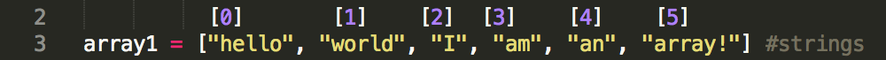
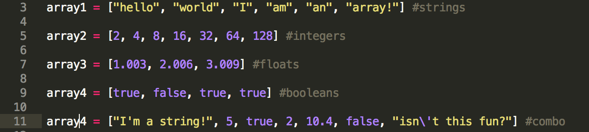
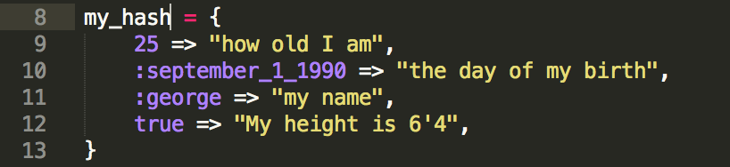
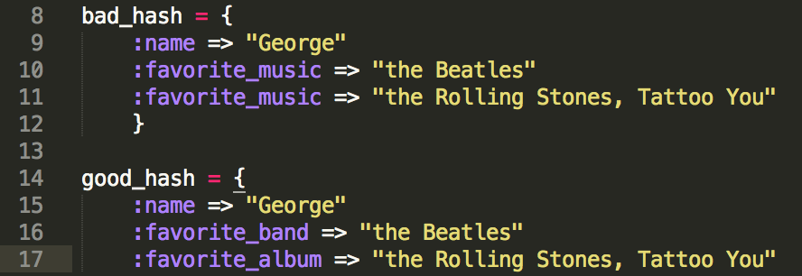
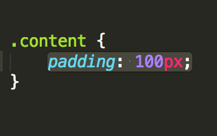
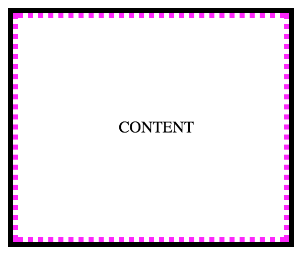
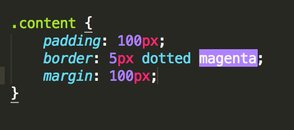
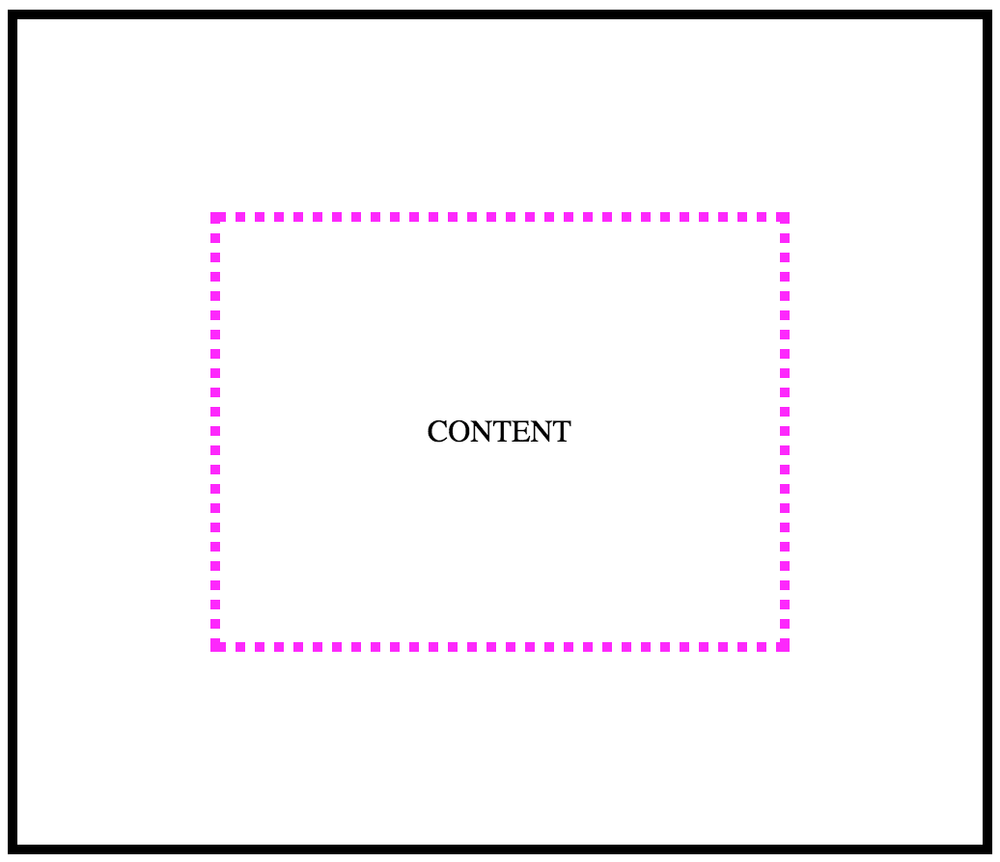

George's Blog
Passwords
If you're like me and most people in the world, you don't follow best password practices. Consider this:
According to a 2014 study by an online security company, the top 25 most common passwords represent 2.5% off all passwords. That list includes the greatest hits like "123456" and "iloveyou" as well as "696969" which ranked #22. Classy. Look at the most common passwords to come out of the recent Ashley Madison hack-- See a pattern?
What about iPhone passwords where a string of 4 numbers could give a stranger access to your email, bank apps and other personal info. According to a rough study of iPhone passwords by an app developer, the top 10 passwords represent 15% of all passwords. Again, "1234" "1111" and 5683 (the numerical representation of "LOVE") all pop up on the list.
That brings up the question of what makes a good password? From great google research to some provocative password tests, I've picked up a few good practices.
1. Use different passwords for different sites.
This doesn't need much explanation, but consider how more and more sites are using email or facebook as your username. If someone found out one of your passwords on a less secure site, which others could they get into? What about your keychain?
2. Length is more important than complexity.
Which is a more secure password?:
A. D0g.....................
B. PrXyc.N(n4k77#L!eVdAfp9
Just by virtue of having more characters, D0g is actually more secure. Those periods after the password are called "padding." It's a good idea to add some kind of padding before or after your password.
3. Use a password managers
When google researchers asked security experts and non-experts whether or not they use password managers, security experts were 4x more likely to use them. The biggest reason non-experts avoided password managers was fear of hacking(ie. If the manager was hacked, all their passwords would be leaked). Password managers allow exponentially more password uniqueness and length across all sites and if security experts are that much more likely to use the managers, the benefits must outway the risks.
I hope this is helpful and interesting!
Cheers,
George
Hashes and Arrays
An Array: A collection of objects indexed as [key] and [value] pairs where the keys are integers starting at [0] and increasing incrementally by 1 and the values are assignable.

Values can be accessed easily by their keys: (hash1(0) returns "hello", hash1(1) returns "world")
Arrays are the simplest and most efficient data structure in ruby. They can be used to store strings, integers, floats and booleans(all objects!):

Adding, subtracting or moving data in arrays is fast and efficient becayse the keys in the [key]=[value] pairs are fixed. Having a strict key set allows for easier data manipulation and navigation. Arrays are a popular collection structure in ruby because of this.
Arrays have many benefits, but what if the data is all strings or floats and can't be indexed by a simple number key? That's where hashes come in!
A Hash: A collection of objects indexed as [key] and [value] pairs where the keys and the values are assignable and can be any object type.

As you can see, there's an integer, a string and a boolean key-- Hashes give you more freedom than arrays to classify your data, though it can make the data more complicated to access and manipulate.
It's also important to remember that while you can have an unlimited number of similar values, you can only have one of each key.

"bad_hash" has two identical keys, so if we ask ruby to return bad_hash[favorite_music], ruby will be confused.
"good_hash" has unique keys that will keep ruby happy.
Depending on what your data looks like and what you're trying to achieve, knowing how to get the most out of Arrays and Hashes in Ruby can make your job much easier!
Cheers!
George
Margins and Borders and Padding, oh my!
Sept 7, 2015
Creating space around HTML elements is easy with CSS! Look at this content nested within a box!
Where is the padding, border and margin you ask? You're looking right at them!
- Padding: The white space between the content and the red dotted box
- Border: You guessed it! That red dotted box? That's the border!
- Margin: The white space between the red dotted box and the black box. (it's like padding for the border)
Now that we have that down, let's look at how we give elements padding, borders and margins in CSS!
As you can see here, our content is surrounded by a black block element:
We don't like the black box being so close to our content, so we're going to add some padding in CSS like this:

Awesome! Now look at how much space our content has!
We gave it 100px of padding on every side! That's great, but now let's make it stand out a little more with a bright magenta border!
We add the border property into our CSS file:

Now our content looks like this:

Which is great.. Except for the fact that our border is WAY too close to the black box element. Lucky for us, we can give the border a little room to breathe with a margin!
In our CSS file we'll add a margin property to our content like this:

Now our content is well highlighted and has enough space to breathe!

Now go out and create some space of your own and never fear spacing properties in CSS again!
Version Control
And why you (as a developer) need it!
July 23, 2015
--Version Control--
When developers work on collaborative projects, it’s a challenge to keep everyone up to date with each other’s edits and saves while maintaining one bug-free and usable version. To manage these issues we use “Version Control” systems.
Version control could be as simple as a college student classifying an essay as “first draft”, making edits in the margins and revising a “working draft” then polishing it up and submitting a “final draft”. The basic advantages of version control remain:
1. an accessible history of edits and saves
2. versions that can be reverted to (if new edits don’t work)
Let’s say now the next assignment is one essay to be worked on by the entire class, with separate groups working on grammar, vocabulary, formatting, and research— That’s sort of like working on a piece of software and it can get complicated.
To handle these large collaborative projects, developers use systems like git and GitHub to understand the who, when and why of edits as well as keeping a central, up to date version of the project.
--Git--
Git is a program that allows users to work on a project through evolving iterations, while always keeping a history of changes that can be reverted to. Git lives on your local computer and keeps track of changes through commits (like checkpoints or save points) and versions.
To borrow an often used analogy, git’s version control system can be compared to a tree. The trunk of the tree being the master (a functional version that can be reverted back to) and the branches being working versions (new changes that are in progress or haven’t been completely tested).
The implementation of a change might look like this:
1. a copy of the master branch is created
2. an edit is made to our copy
3. the edit is tested until we’re confident it doesn’t interfere with the rest of the program
4. the edit is “committed” along with a “commit message” letting us know where and why we made an edit
5. when we’re confident in the changes we merge the branch back into the trunk, creating an updated master branch that we can now make more branches from.
The biggest benefit of this system is being able to experiment and play with our project without having to compromise it’s integrity.
--GitHub--
If it’s our project is collaborative, there will be multiple people making and approving changes. That’s where GitHub comes in. GitHub allows teams to have a master version that’s available to all members, and a central place to implement their edits.
GitHub can be thought of as a bigger tree available to all collaborators where you can push changes up and pull the most current version down. The biggest advantage of GitHub is it allows teams working remotely to avoid stepping on each others toes while building projects.
GitHub is simple and extremely user friendly. It also has a huge social aspect in which you can make your projects public and anyone can come in and contribute changes. Do yourself a favor and check it out!
Git download
GitHub homepage
DBC Culture
Or how I learned to stop worrying and love the code
August 23, 2015
To put it frankly, I’m super excited for this journey ;)
I love that Dev Bootcamp addresses fears and doubts head on. Something I’ve been working on in my everyday life is working through anger, fear and other intense/distracting emotions. It’s so easy to get swept up in these emotions and for a long time I didn’t realize there is another choice.
Staying in the anxiety, the stress. Experiencing it, not judging yourself for feeling it, then acting from within the storm. This is not easy to do and I’m still learning, but that DBC incorporates this kind of mindset as a part of it’s curriculum get’s me excited for what’s to come.
My expectations of DBC have changed greatly. I definitely find myself sometimes coming from a consumer or restaurant mindset. I think a lot of that has to do with justifying my actions to other people. Saying “yeah it’s 20 weeks and most people land 65k+/yr jobs off the bat” is easy. Much easier than saying “No, I’m not 100% sure coding is for me. I worry that the program is too emotionally centered. But I think working with code is awesome and it makes me feel like I’m behind the curtain and I can’t remember being this excited to learn something and test my limits since I can remember”.
One is going to sound much better to my family members.
So yes, I’m having doubts for sure— I’m nervous I’ll be too quick a learner for some people, I’m nervous I’ll look like an idiot compared to others. When I’m sucked up in those thoughts, they feel real— But right now I can tell you (and myself) that these thoughts come from a place of irrational insecurity.
It’s natural to feel like helping someone else is putting yourself behind, or that exposing vulnerability and asking for help means your weak or lesser. Like that there are only 10 jobs for the 17 people in the Chicago cohort and it’s dog eat dog. Is that true? Of course not, that’s ridiculous. We’re all on the path and if you want to find out what you’re capable of you have to become vulnerable and risk failure.
Anyway, enough rambling— It’s Sunday night and I still have to do the week 1 quiz.
Cheers guys,
George